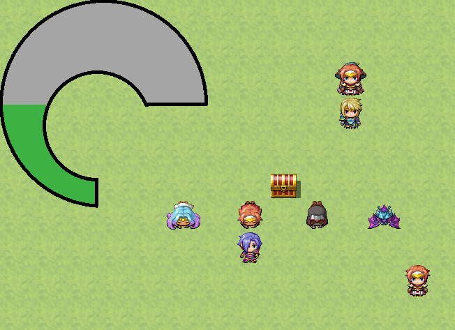
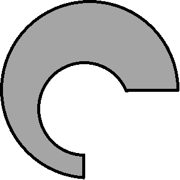
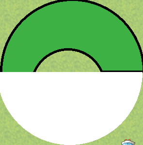

マスクを使ってゲージを作る
変わったゲージ
今回はPIXIのマスクの機能を使って変わったゲージを作りたいと思います。
こういうゲージです。

デザインはともかく、ちょっと特殊な形のゲージです。
画像の用意
画像を２つ用意します。まず、ゲージの枠。

そして、ゲージの中身
想像のとおり、この２つを重ねるゲージが満タンの状態になります。
マスクを作る
扇形のマスクを使って、ゲージの中身を部分的に描画します。
例えば下図のようにするとマスクをすると下半分の白い部分だけが描画されます。

なので、ゲージが100%のときは360度の円、ゲージが50%なら180度の円のマスクを設定すれば、パーセンテージに応じたゲージが出来上がります。
ソースコードはこんな感じになります。
//ウィンドウとしてゲージを作ります
Window_Gauge.prototype.initialize = function() {
Window_Base.prototype.initialize.call(this, 0, 0, 300, 300);
this.opacity = 0; //ウィンドウ部分を消すため
//ゲージの枠を読み込み
var base = new Sprite(ImageManager.loadPicture('Base'));
//ゲージの中身を読み込み
var gauge = new Sprite(ImageManager.loadPicture('Gauge'));
//マスクを作る
var mask = new PIXI.Graphics();
mask.beginFill(0xffffff, 1); //白画像で塗りつぶす設定
//扇を描く。(144, 151)を中心に半径150で0度の角度からπ[rad]の角度で描画
//ここで角度を変数などに格納して描画するようにすれば、値に応じたゲージが出来ます
mask.arc(144, 151, 150, 0, 3.14);
mask.endFill();
gauge.mask = mask; //ゲージの中身にマスクを設定
base.addChild(gauge); //ゲージの枠にゲージの中身をaddChild
this.addChild(base); //できたゲージをウィンドウにaddChild
};